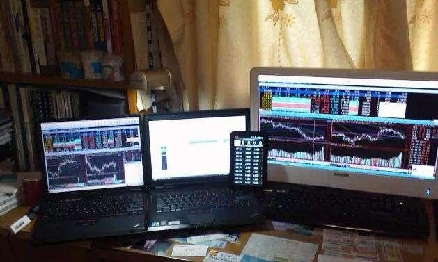

在线外汇交易平台与
在线股票交易都是投资者比较常用的交易方式，这两种交易方式在一定程度上有其相似之处，但更多的还是相互间的区别，因为任何一种交易方式都有其区别于其他交易的特点，那么在本文中我们就一起来了解一下在线
外汇交易和在线股票交易之间的区别。
一、涨跌停板的对比
在股票市场中，我国的二级市场设置有涨跌停板，通常情况下股票每天最大的涨幅为10%，这一点我们在对股票基础知识的学习 中都有了解，投资者只有拥有股票并且在股票上涨的情况下才可以获利。
外汇交易没有涨跌停板，这一点在外汇知识中也有介绍。通常情况下外汇市场每天的波幅是1%，在有重要数据公布或者是重大事件发生时，波动有可能会达到2%以上。因为保证金外回报的杠杆放大比例是10倍，所以在市场波动为1%的时候，投资者的获利机会就相当于股票涨停板的10%。也就是说外汇交易几乎是每天都有机会获得10%甚至是以上的利润。外汇交易是双向交易的模式，投资者可以根据自己的喜好选择做多或是做空，不管是汇率上升还是下跌投资者都有机会获利。
二、交易资金的对比
在股票市场中，不管投资者是购买股票还是购买基金，投资者都要付出全额的资金。
外汇交易中投资者只要存入相当于交易资金1/10的保证金就可以进行操作。
三、交易清算模式的对比势
我国的股票市场采用的是“T+1”的清算模式，也就是说投资者当天买进股票第二天才可以卖出，而外汇交 易则是“T+0”的清算模式，也就是说投资者可以当天不限次买卖。
四、市场透明度的对比
在股票市场中，国内的股市规模要小于国际外汇市场的规模,有一些个股很容易受到机构操作者的操纵。
而国际外汇市场每天的交 易量非常之大，投资者不会被轻易操纵。并且外汇市场信息公开化这一特点非常明显，其透明度相对于股票来说更为透明。
在AvaTrade交易外汇或股票产品时，您可以满怀信心。在这里，您可以交易多达250种以上的交易产品，体验到具有竞争力的点差，且高效执行的
外汇交易平台，享受5x24小时多种语言的在线客服。
您也可以通过浏览网站上“
学习中心”获取您想要的相关信息。在那里，您将发现有
外汇电子书、
视频教程、
外汇术语，以及AvaTrade爱华特别为投资者创建的教育网站SharpTrader，辅助您踏上成功交易之路。我们深知，交易者的压力可能有点大，有时候甚至有点可怕。但我们尽其所能确保您做好充分的准备，再在真实交易市场中进行交易。
六、做股票交易和外汇交易要注意那几点？
1.盈利持续
经验不足的投资人，在开盘买进或售出某类品种以后，一见有盈利，就马上想起平盘要钱。盈利强制平仓做起來好像非常容易，可是捕获盈利的机会确是一种大学问。有工作经验的投资人，会依据自身对走势的判断，决策平盘的時间。假如觉得市势会深化向着，对他有益的方位发展趋势，他会耐着脾气，明知有益而不赚，任凭费率尽可能朝着自身更有益的方位发展趋势，进而使盈利持续。一见蝇头小利就平盘不一定见好即收，终究，弄不好会盈少亏多。
2.掌握
如果你觉得行情不足明亮，自身又欠缺自信心时，以不沾为宜。假如自身觉得沒有掌握，比不上哪些都不做，耐心等待开盘的机会。假如早已开盘，多有“食不知味，弃之可惜”的感觉时，干脆平盘退场。切忌过分在乎小便宜，冒无把握之风险性。
3.看好机会
金融市场，常常传来某些信息，一些信息过后确认是真正的，有的信息过后确认只不过是谣言。作为投资人的做法是，在听见喜讯时马上买进，如果信息获得确认，便马上售出。反之亦做在坏消息传来时，马上售出，如果信息获得确认就马上买来。金融市场是一个十分比较敏感的贸易市场，说白了见微知着，见风即雨，是投机家的心理状态反应。从盈利的的来看，务必跟随市场走。

4.心理状态
做交易，具备很大的风险性。盈亏是必定产生的。期待盈多亏少，不要期待做常胜将军。沒有输的思想准备，光想着着挣大钱的人，没办法确保到头来不亏损。恰当的心态是，具有赚的期待，也有赔的思想准备。要剖析市势的趋势，“假如市势对自身有益，就耐心等候，争得盈利持续，可是，当市势于己不利时，尤其是自身已觉得市势不对头时，不必太在乎得与失。输一点儿就输一点儿，斩仓退场。太过在乎得失，亏一点儿便承受不住。做错时就硬扛、硬等，有时候竟然越等越槽。